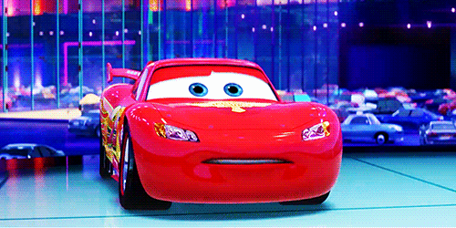
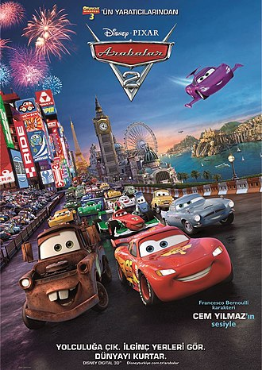
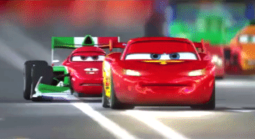
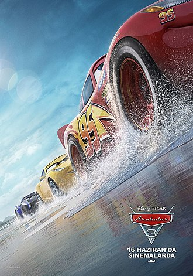

ARABALAR 1

Arabalar(Cars),Pixar yapımı,dağıtımı Walt Disney tarafından gerçekleştirilen,2006'da yayımlanan Amerikan komedi-macera ve animasyon filmidir.Piston Kupa'sını almaya hedefleyen çaylak bir yarışçı olan Şimşek McQueen,son yarışta liderliği 3 yarışçı ile paylaşmıştır. Bu yarışçılar Kral lakaplı Strip Weathers ve Chick Hicks'dir.Son bir yarış
için California'ya doğru yola çıkan Şimşek McQuuen,yolda onu taşıyan araçtan düşer ve kaybolur.Onu taşıyan aracı ararken yolu Radyatör kasabasına düşer.Porshe marka
olan Sally'ye aşık olur ve art arda üç tane piston kupası almış yarışçı Hudson Hornet(Doc) ile tanışır.Kasaba'da yaşayan Çekici Mater ile dostluk kurar.Burada geçirdiği sürede
hayatı değişir.California'ya tam vaktinde yetişen Şimşek McQueen,geride bıraktığı anı laryüzünden yarışa odaklanamaz.Yarışın kendisi için bittiğini düşünürken Radyatör
kasabasındaki aarkadaşları ona yardıma gelir ve Pit lideri Hudson Hornet(Doc) olur.Tam yarışı
kazanacakken Kral bir kaza geçirir.Ona yardım etmek isteyen Şimşek McQueen,Kral'ınson yarışını bitirebilmesini sağlar ve bu yüzden yarışı kaybeder.Bundan dolayı saygı gören Şimşek
McQueen,mutlu olur ve Radyatör kasabasına geri döner ve yarış üssünü buraya kurar.ARABALAR 2
Arabalar 2, Pixar'ın yapımlığında bir bilgisayar animasyonu aksiyon macera komedi 3-D filmidir ve 2006 yapımlı Arabalar filminin devamıdır.
Dağıtımını Walt Disney Pictures şirketi yapmıştır. Ratatuy filminin yönetmeni Brad Lewis ve filmin yapımcısı John Lasseter görevi devraldı.
Filmde Şimşek McQueen ve Mater,yarış için Japonya, İtalya ve İngiltere'ye gitmektedir.
Şimşek McQueen, yeni pit ekibi ve yeni ekip şefi Mater ile üç farklı ülkede yapılan yarışlara katılır. Bu ülkeler: Japonya, İtalya ve Birleşik
Krallık'tır. Mater, Finn McRoket adındaki bir İngiliz gizli ajana yardım eder ve kendini casuslar dünyasında bulur.


ARABLAR 3

Arabalar 3 (İngilizce: Cars 3), Pixar'ın yapımcılığında Walt Disney Pictures tarafından yayınlanan bir bilgisayar animasyonu 3-D filmidir
ve 2006 yapımlı Arabalar ve 2011 yapımlı Arabalar 2 filmlerinin devamı olan 16 Haziran 2017 tarihinde vizyona giren üçüncü Arabalar filmidir.
Yeni jenerasyon üstün teknoloji ile üretilmiş yarışçılar tarafından gafil avlanan efsane Şimşek McQueen, talihsiz bir kaza sonucu sevdiği spordan
ayrılmak zorunda kalır. Tekrar oyuna dönebilmek için, hevesli ve genç yarış teknisyeni, Cruz Ramirez'in yardımlarından ve Hudson Hornet'in yaşlı
tamircisi Smokey'den ve birkaç sürpriz geri dönüşten ilham alır. #95'in henüz zamanının geçmediğini kanıtlamak için çalışacak ve Piston
Kupası'nı tekrar almaya çalışacaktır.